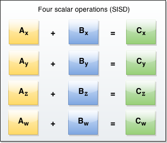

可以在支持的CPU上使用SIMD/SSE指令
SIMD是Single Instruction/Multiple Data的缩写
SIMD操作使用单个指令操作多组数据
标量操作(SISD)每个指令只会操作一组数据
使用单指令处理数据集会极大的提升应用的性能
具体的提升效果取决于你的数据集（矢量对象、封装数据）的大小或是其他参数
SIMD指令早已广泛应用于3D图像处理、音视频、物理计算、加密及其它领域
当算法要分别处理不同的数据时，数据集中的不同数据并不能被区分处理
如何使用蒙板以及如何将数据重新对齐来解决这一问题
共享内存或进程优先级排列允许全面的并行处理（MIMD）
使用这些技术可以更轻松的为进程排序
概念同样可以使用在SIMD上
可以想象在你程序中的每个进程中都是用SIMD指令
JavaScript SIMD API 包含几种新的数据类型和操作指令，允许你通过JavaScript使用SIMD指令
浏览器根据底层硬件针对这些API为用户提供了经过高度优化的方法
一个SIMD的数据类型，例如SIMD.Float32x4
一个SIMD矢量对象包涵大量的单元数据，它们被称为通道
一个针对当前API的SIMD寄存器宽度为128bit
当一个矢量的宽度是4（X4）时，寄存器内有4个Float32数据，它们的通道名为x,y,z,w
相比于对每个对象操作4次，SIMD允许你同时对四个通道进行操作
如图SISD与优化后的SIMD

标量 / SSID 代码示范
现在使用 SIMD